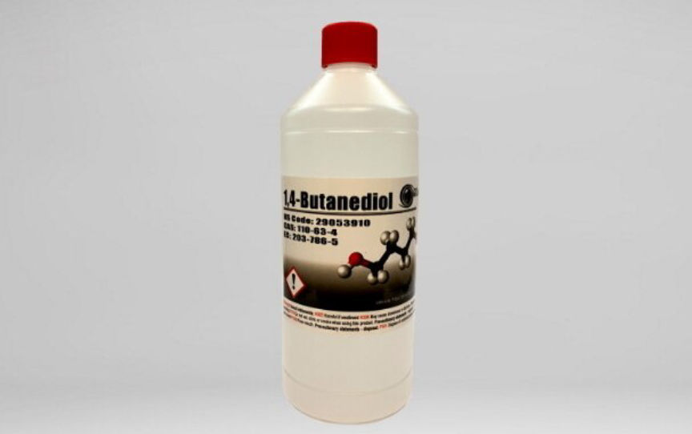
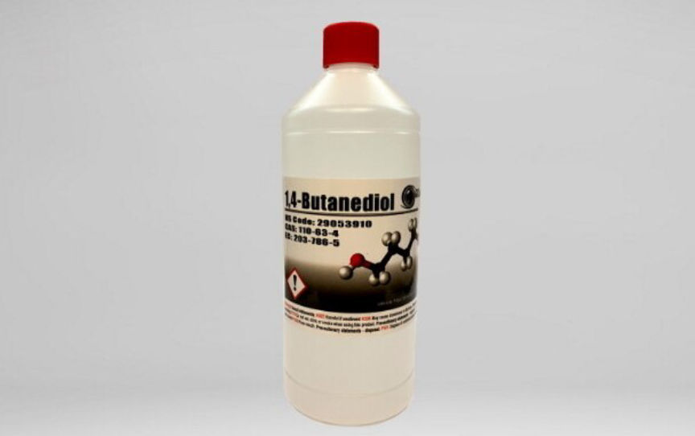

White House Market Vendor "TrueNextDay" Imprisoned
~2 min read | Published on 2023-09-12, tagged Darkweb-Vendor, Sentenced using 426 words.
A Missouri man was sentenced to 120 months in prison for distributing a variety of drugs through the dark web.
According to court documents, Andrew Mitchell, 45, was sentenced after he admitted to selling heroin, methamphetamine, cocaine, and 1,4 Butandediol through the "TrueNextDay" vendor profile on White House Market.

The sentencing stemmed from an investigation launched into TrueNextDay by the FBI in May 2021.
On June 3, 2021, a business owner reported that a package containing a crystal-like substance had been returned to his address under a fictitious name. After testing the substance, the investigators established that it was 28.45 grams of methamphetamine. The investigators later found out that the IP address used to track the package had been assigned to Mitchell.
While reviewing Truenextday's profile in early July, the investigating agent reportedly came across an updates section where Mitchell's address had been listed as "Andrew Mitchell, 632 E.Kerr St. Springfield, MO 65803" under a post titled "6-30 SHIPPING DELAY UPDATE."
Between May and September, the CBP intercepted several packages destined for Mitchell's residence. One of the packages seized on September 12 had been shipped from Poland and contained six bottles carrying a clear liquid. Tests revealed that the package contained more than 6 kilograms of 1,4-butanediol.
On October 7, the investigators made a controlled delivery of a package intercepted by the CBP on September 24. The package contained bottles labeled 1,4 Butanediol. The investigators knocked and left the package on the front porch of Mitchell's residence. Mitchell came out of the house and asked the inspector if he had another package for him. He thanked the inspector for the delivery and carried the delivered package into the house.
A few minutes later, the investigators executed a search warrant at the residence. They found the five 1,4-butanediol bottles in Mitchell's bedroom where they also found a Glock handgun in a locked safe. Mitchell was logged in to the TrueNextDay vendor profile on a computer found in his bedroom.
When questioned, Mitchell confessed and gave the investigators the passwords to his cryptocurrency wallets. The investigators seized 17.617213 Monero, 0.22118731 Ethereum, 1.0043 Polkadot, 0.00022752 Bitcoin, and 10,202 Dogecoin. The investigators also seized $1,120 in cash.
Mitchel was charged with several drug trafficking offenses in a six-count indictment. He pleaded guilty to one count each of conspiracy to distribute a controlled substance analogue and being a felon in possession of a firearm in November 2022.
On September 7, 2023, Judge Douglas Harpool sentenced Mitchell to 10 years in federal prison. The sentence will be followed by three years of supervised release.
According to court documents, Andrew Mitchell, 45, was sentenced after he admitted to selling heroin, methamphetamine, cocaine, and 1,4 Butandediol through the "TrueNextDay" vendor profile on White House Market.

A botltle of 1,4 Butandediol (BDO)
The sentencing stemmed from an investigation launched into TrueNextDay by the FBI in May 2021.
On June 3, 2021, a business owner reported that a package containing a crystal-like substance had been returned to his address under a fictitious name. After testing the substance, the investigators established that it was 28.45 grams of methamphetamine. The investigators later found out that the IP address used to track the package had been assigned to Mitchell.
While reviewing Truenextday's profile in early July, the investigating agent reportedly came across an updates section where Mitchell's address had been listed as "Andrew Mitchell, 632 E.Kerr St. Springfield, MO 65803" under a post titled "6-30 SHIPPING DELAY UPDATE."
Between May and September, the CBP intercepted several packages destined for Mitchell's residence. One of the packages seized on September 12 had been shipped from Poland and contained six bottles carrying a clear liquid. Tests revealed that the package contained more than 6 kilograms of 1,4-butanediol.
On October 7, the investigators made a controlled delivery of a package intercepted by the CBP on September 24. The package contained bottles labeled 1,4 Butanediol. The investigators knocked and left the package on the front porch of Mitchell's residence. Mitchell came out of the house and asked the inspector if he had another package for him. He thanked the inspector for the delivery and carried the delivered package into the house.
A few minutes later, the investigators executed a search warrant at the residence. They found the five 1,4-butanediol bottles in Mitchell's bedroom where they also found a Glock handgun in a locked safe. Mitchell was logged in to the TrueNextDay vendor profile on a computer found in his bedroom.
When questioned, Mitchell confessed and gave the investigators the passwords to his cryptocurrency wallets. The investigators seized 17.617213 Monero, 0.22118731 Ethereum, 1.0043 Polkadot, 0.00022752 Bitcoin, and 10,202 Dogecoin. The investigators also seized $1,120 in cash.
Mitchel was charged with several drug trafficking offenses in a six-count indictment. He pleaded guilty to one count each of conspiracy to distribute a controlled substance analogue and being a felon in possession of a firearm in November 2022.
On September 7, 2023, Judge Douglas Harpool sentenced Mitchell to 10 years in federal prison. The sentence will be followed by three years of supervised release.